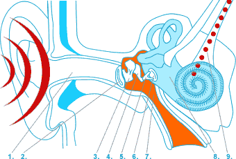

Cochlear Modeling
|  |
The cochlea, or inner ear, is a highly sensitive organ capable of detecting sound frequencies ranging from 20 to 20,000 Hz and sound intensities from 0 dB (the threshold of hearing) to 120 dB (similar to the sound of a jet engine). This remarkable biomechanical sound sensor acts as a frequency analyzer where each location on the basilar membrane vibrates in response to specific sound frequencies . This results in a frequency-to-location mapping, with each stimulus frequency having a corresponding location on the BM. As such, the unrolled cochlea acts like an "inverse piano", where each location (akin to a key being played) corresponds to a specific frequency .

Historically, the cochlea was thought to function as a passive device, a theory proposed by Nobel laureate Georg von Békésy based on his studies with human cadavers. However, in 1948, Thomas Gold suggested that the cochlea is actually an active device, which enhances its sound detection capabilities through a mechanism later identified as the cochlear amplifier. Although initially rejected by von Békésy, Gold’s theory was validated three decades later by David Kemp through the discovery of otoacoustic emissions—sounds emitted by the cochlea and detectable in the ear canal. Indeed, the ear does not just receive sound, it also produces noise!
Nonlinear mechanical interactions in the cochlea lead to various dynamic phenomena, including frequency mixing, detuning, and amplification. Here's an intriguing demonstration you can experience now. First, listen to a single tone with a fixed frequency (video to the left). Our simulation shows a dominant vibration at one specific location on the membrane that corresponds to that single frequency. Next, listen to a tone that gradually increases in frequency (middle video). You will observe the dominant vibrations on the membrane shifting to the left. Now, what happens if we combine the two: a fixed frequency and a swept frequency? Do you hear both, and only both? If you answered yes, you'd be mistaken. You actually hear an additional frequency that doesn't physically exist! Our simulation (video to the right) shows this "phantom" frequency that seemingly appears out of nowhere and moves in the opposite direction. This extra frequency is known as the cubic difference tone. Makes you think about how we perceive reality ...
| + | = |
Here's a simple MATLAB code that generates the sounds.
Fs = 44100; % Sampling Frequency dt = 1 / Fs; % Sampling Period tf = 2; % Final Time t = 0 : dt : tf; % Time Horizon Signal_1 = 0.5*sin(2*pi*1000*t); % Single Tone with Fixed Frequency Signal_2 = 0.5*chirp(t, 1000, tf, 1800); % Single Tone with Moving Frequency Signal_3 = Signal_1 + Signal_2; sound(Signal_1, Fs); pause(); % Play Signal 1 sound(Signal_2, Fs); pause(); % Play Signal 2 sound(Signal_3, Fs); % Play Signal 3
We refine a mathematical model of the middle and inner ear by incorporating stochastic effects common to biological systems. The model consists of (1) a partial differential equation to describe the fluid dynamics, (2) an array of coupled oscillators to simulate the micromechanics on the basilar membrane at each location x, and (3) a nonlinear amplifier to model the active dynamics of outer hair cells (OHC) on the membrane. The stochastic noise enters the dynamics as a spatio-temporal gain in the amplifier.
 |
Through analysis of this enhanced model, we succeeded in:
1. Developing a reduced model that is computationally efficient. A future goal is to use the reduced model in biologically-aware audio signal processing and generation.
 |
2. Investigating the stability implications of nonsmooth profiles on the membrane.
 |
3. Investigating stability in response to stochastic perturbations. These instabilities might underly the known phenomenon called otoacoustic emissions or even tinitus.
 |
4. Perform a dynamic mode decomposition to identify the vibration modes of the membrane for each stimulus frequency.
 |
References:
- Filo, Maurice, and Bassam Bamieh. "Investigating Instabilities in the Mammalian Cochlea Using a Stochastic Uncertainty Model." IEEE Transactions on Molecular, Biological and Multi-Scale Communications 6.1 (2020): 1-12.
- Filo, Maurice, Fadi Karameh, and Mariette Awad. "Order reduction and efficient implementation of nonlinear nonlocal cochlear response models." Biological cybernetics 110 (2016): 435-454.
- Filo, Maurice, and Bassam Bamieh. "Investigating cochlear instabilities using structured stochastic uncertainty." 2017 IEEE 56th Annual Conference on Decision and Control (CDC). IEEE, 2017.
- Brown, Ann M., and David T. Kemp. "Suppressibility of the 2 f1-f2 stimulated acoustic emissions in gerbil and man." Hearing Research 13.1 (1984): 29-37.
- Ku, Emery M., Stephen J. Elliott, and Ben Lineton. "Statistics of instabilities in a state space model of the human cochlea." The Journal of the Acoustical Society of America 124.2 (2008): 1068-1079.
- Neely, Stephen T., and D. O. Kim. "A model for active elements in cochlear biomechanics." The journal of the acoustical society of America 79.5 (1986): 1472-1480.